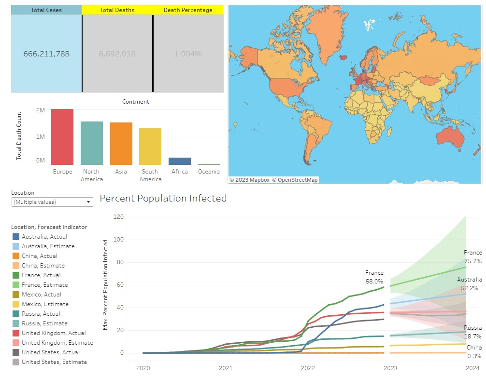
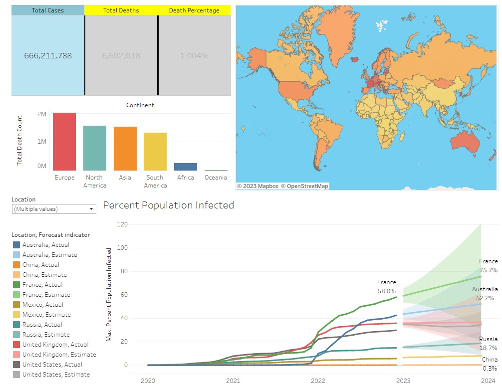

Current Date and Time
The current date and time is:
This dashboard presents a comparative analysis of the
operational models of a restaurant chain under two distinct
ownership structures: sole Owner/Operator and Franchise.
In addition, this analysis includes a focus on how sales are
impacted by two key factors, namely, the square footage of
the restaurant and its geographic region.
 

This project involves utilizing SQL for data exploration of COVID-19, specifically examining global mortality and infection rates.

This dashboard analyzes data from the 2019 NFL Season to identify correlations between the number of games a team wins and their corresponding points scored or points allowed during the season.

This analysis involves examining data from Underdog's BBM1 with a focus on identifying draft trends of teams that successfully advanced into the playoffs and finals.

This analysis involves examining data from Underdog's BBM3 with a focus on identifying draft trends of teams that successfully advanced into the playoffs and finals.